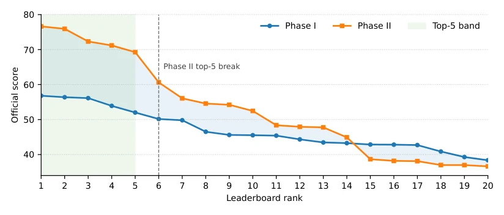

This CVPR 2026 Workshop report is actually a post-match review of "Red Teaming", rather than a single algorithm innovation. It records the mutual confrontations of 54 teams in driving VLA adversarial attacks, revealing the "paper tiger" attribute of current multimodal large models in autonomous driving scenarios. The highlight lies in systematically verifying the game strategies of image character interference and text suffixes, especially discovering that typographic content is a persistent vulnerability. To put it bluntly, this competition exposed the model's over-reliance on visual shortcuts; adding a little blur and garbled text, and the model does not know where the traffic lights are. The limitations are also obvious; as a competition report, methods are scattered lacking a unified theory, and overly reliant on a specific dataset DriveLM, generalization is questionable, some teams were even disqualified for not submitting reports, appearing not rigorous enough. However, it indeed provides a valuable benchmark for future robustness evaluation.
Autonomous driving VLA is increasingly popular in safety-critical scenarios, but adversarial robustness is worrying. Existing research mostly focuses on image classification [1, 2] or simple VQA [7, 11], ignoring the complexity of multi-view aggregation and long-text reasoning. In driving scenarios, models need to fuse six-camera information [22], single-point perturbations are easily compensated by other views. In addition, existing attacks do not fully consider the length penalty [19] of text suffixes and black-box transferability. The emergence of specialized models like Dolphins [17] further highlights the necessity of cross-model attacks. If not solved, misjudging traffic lights or pedestrians will lead to fatal accidents. And current evaluation is mostly based on white-box, lacking consideration of black-box transferability, making it difficult to reflect real deployment risks. Especially for safety-critical nodes, such as collision risk, models are often overconfident and easily misled by adversarial samples.
The overall process is "image perturbation + text suffix" joint optimization. MR-CAS adopts the TVDA framework, first builds a local proxy environment evaluation, then uses LLM to locate key objects (e.g., traffic lights), applies local blur, and adds meaningless character interference in the panorama, utilizing visual-text shortcuts to break multi-view reasoning. team tong adopts joint optimization, solving the gradient conflict between image PGD and text suffixes (e.g., Q_MOTION type directly removes suffix), and balances attack difficulty through hierarchical weight allocation (e.g., detection class 2.5x). Both utilize transfer enhancement techniques such as NI/MI/DI/TI [5, 6, 13] to ensure black-box effects. In addition, some teams utilize QA graph structure to allocate budget, strengthening attacks on safety-critical nodes, reflecting the importance of task awareness. There are also teams like JNU AdvML that directly attack internal multimodal features, showing the potential of feature space optimization.
实验Experiments
数据集为 200 个驾驶场景，含六视角图像及 QA 对。基线为 DriveLM-Agent [22] 和 Dolphins [17]。指标为 GPTScore（回答偏差）、图像相似度及后缀长度。Phase I 已知模型，Phase II 引入隐藏黑盒。MR-CAS 以 76.63 分夺冠，team tong 紧随其后。消融显示“模糊 + 干扰”优于单一手段，且无意义字符比语义词更有效。图 1 展示了 Phase II 分数分布更分散，证明黑盒迁移难度显著增加。部分队伍因未提交技术报告被取消资格，反映了评估流程的严格性。此外，Phase II 的分数跨度从 36.63 到 76.63，表明攻击策略的多样性对最终排名影响巨大。
The dataset consists of 200 driving scenarios, containing six-view images and QA pairs. Baselines are DriveLM-Agent [22] and Dolphins [17]. Metrics are GPTScore (answer bias), image similarity, and suffix length. Phase I involves known models, Phase II introduces a hidden black-box. MR-CAS wins with 76.63 points, team tong follows closely. Ablation shows "blur + interference" is better than single means, and meaningless characters are more effective than semantic words. Figure 1 shows Phase II score distribution is more dispersed, proving black-box transfer difficulty significantly increased. Some teams were disqualified for not submitting technical reports, reflecting the strictness of the evaluation process. In addition, Phase II score span from 36.63 to 76.63, indicating attack strategy diversity greatly impacts final ranking.

Figure 1. Score distributions of the top 20 entries on the Phase I and original Phase II leaderboards. Phase II exhibits a wider spread and a pronounced separation among the leading valid teams. The two Phase II entries later invalidated for missing technical reports are retained in the visualization to preserve the original leaderboard distribution.